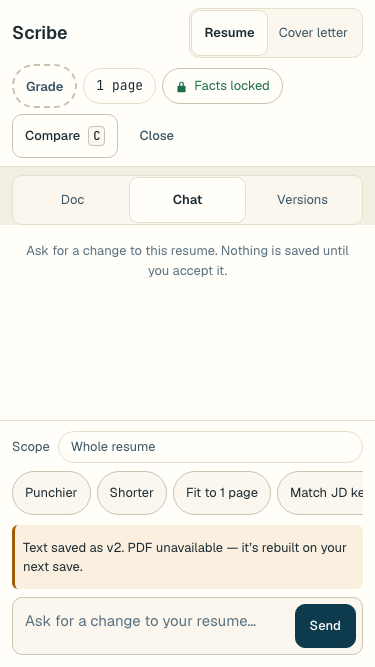
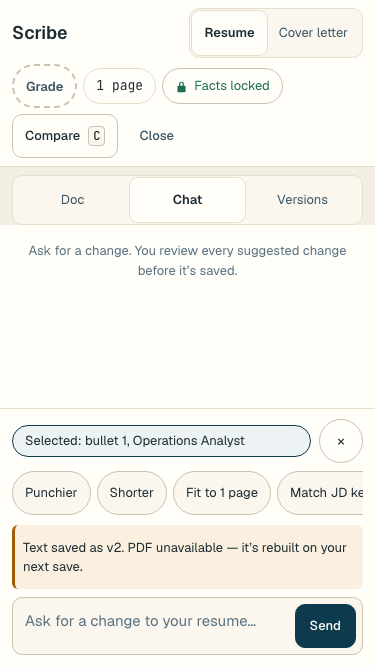
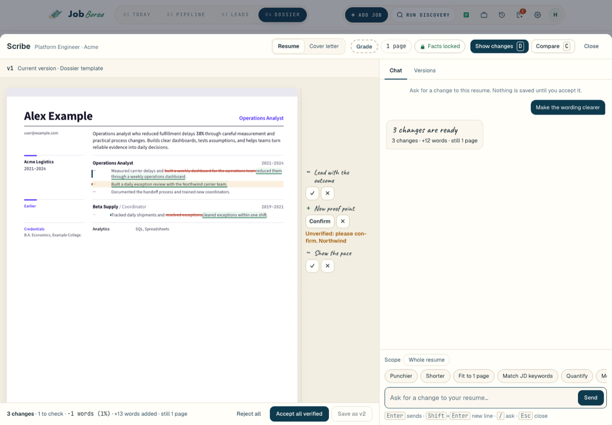
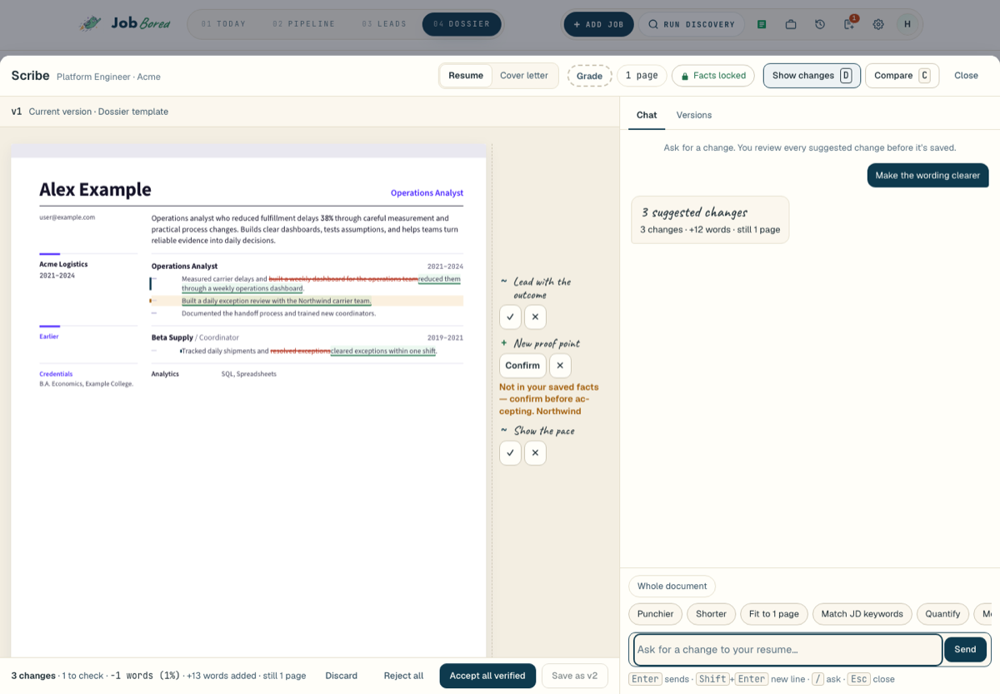
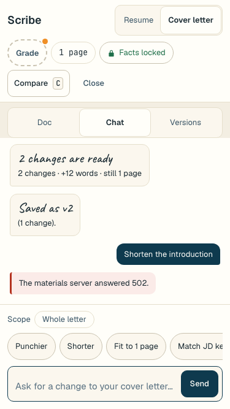
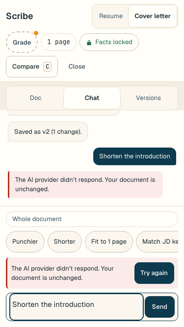
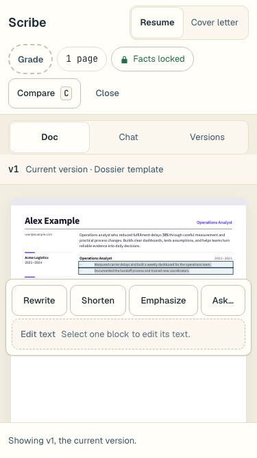
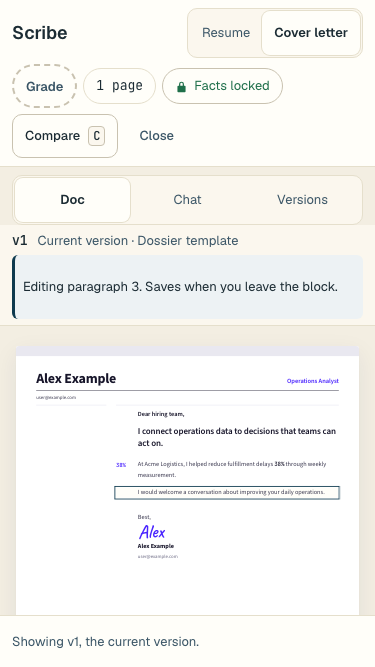
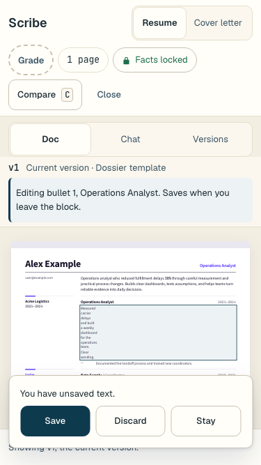

Scribe editor repairs
Both editors, résumé and cover letter, now keep unfinished suggestions recoverable. They report saves truthfully and stop cleanly, and they explain failures in plain words. You can also scope a request to selected blocks and edit a block's text directly, by mouse or keyboard.
Issues and how each was resolved
| ID | What went wrong | What happens now | Proof on the candidate | Status |
|---|---|---|---|---|
| RISK-01 | A Stop that won the race could still be overwritten as "ready", and two finish events were sent. | A proposal finishes exactly once. Stop keeps the partial changes, a failed disk write still ends every open stream, and Discard can't bring a file back. | The strict Stop test passed 20/20 in each of 11 host rounds (220 runs). The ordering tests SCRP-B1–B3, B17, B23 and B30 failed before the fix. | fixed |
| ASTRA-01 | Closing, switching documents or sending a second request stranded a ready proposal and blocked both documents with "answered 409". | An unfinished request comes back with Review and Discard. Your typed text is kept. Discard waits for the server and says so if it fails. | QA: 3/3 PASS for each document in a real browser against the real service. SCRP-F21, F23, F74–F76. | fixed |
| ASTRA-02 | Pressing Stop before the request had an ID left a hidden pending request, and retrying got a 409. | Stop is remembered. When the late ID arrives the request is stopped. Old callbacks can't change the next document. | QA: PASS for both documents (null ID, then late stop 200, then retry 202). SCRP-F22, F77. | fixed |
| ASTRA-03 | The text was saved, but the PDF failed and the editor said "Not saved". Pressing Save again failed. | The editor says "Text saved as v1. PDF unavailable — it’s rebuilt on your next save." Save is gone, and the history and preview move forward. The other document's PDF is kept. | QA: PASS for both documents. The real-PDF gate passed 4/4. SCRP-B8–B10, B15/B16, B28. | fixed |
| ASTRA-04 | After a newer version appeared, the retried request showed the old version header and old redlines. | The editor installs the actual current version before showing any marks. | QA: PASS for both documents. SCRP-F14, F26. | fixed |
| ASTRA-05 | Useful server explanations were replaced by "The materials server answered 409/503". Provider failures were blamed on the template. | Each cause gets its own message and next step: provider down, unreadable reply, rate limited, cut off, model not set up, and a real layout problem. No raw payloads or paths are shown. | Real-service browser tests cover 7 codes for each document (SCRP-F27/F28). QA: PASS. | fixed |
| GAP-02 | You could select text, but every request still applied to the whole document. | Requests are scoped to the selected blocks, using server node IDs. A scope pill and actions toolbar appear. A stale selection asks you to select again and never widens silently. Blocks are reachable by keyboard. | QA: PASS at 1440 and 375 for both documents. The strict keyboard-only journey (Tab to the document, arrows to a block, Enter, Edit text) passes in all 4 cells. | built |
| GAP-01 | There was no way to type into the document directly. | Plain-text block editing saves one version two seconds after you leave the block, and the text is kept exactly as typed. Lines that hold a locked figure can't be typed into; Scribe explains why and points to a request instead. New facts need explicit confirmation, with every new phrase listed. Drafts survive conflicts and closing the role. | QA: PASS for both documents (one version, sibling unchanged, plain paste, confirmation, stale draft kept, keyboard edit). | built |
Before and after
Left: base 3641d33f. Right: candidate. Fictional data. Each "before" for a new control shows the final markup with the old stylesheet.
Saved text when the PDF fails (résumé, 375px)


Reviewing suggested changes (résumé, 1440px)


Provider error keeps your request (cover letter, 375px)


Selection actions (résumé, 375px)


Direct text edit (cover letter, 375px)


Unsaved text on navigation (résumé, 375px)


Verification on the frozen candidate
| Gate | Command scope | Result |
|---|---|---|
| A · service | nodes, edit, fact-check, commit, pipeline, integration API, regenerate | 142 / 142, 0 skipped |
| B · editor units | api, lifecycle, carryover, keyboard, diff, versions, selection, manual, score, node IDs | 320 / 320, 0 skipped |
| C · browser | edit journey, desk, real-PDF save (both documents, real service) | 70 / 70 |
| CSP · visual | scriptless frame smoke · Scribe visual spec | 6 / 6 · 21 / 21 |
| D · contracts | materials contract, lint, typecheck, all contracts | all exit 0 |
| E · Stop stress | strict Stop test, 20 separate runs | 20 / 20 |
| Full suite | npm test | 7878 / 7889 pass, 0 skipped, 7 todo. The 4 failures also fail on base (logo resolver, submission ownership gate, Docker boot). |
| Live provider | Gemini, 2 fictional requests per document | 4 / 4 saved, persisted, sibling unchanged |
| Secrets | gitleaks detect 3641d33f..3fea8656 | no leaks |
Independent review: a Fable plan check before any code, then eight diff rounds alternating Fable and Astra. P1 and P2 findings in the new work were fixed with a test that failed first. After four rounds kept finding new ways to change a locked figure by typing, you chose to make lines with locked figures non-editable (D29).
Not proven, and what needs you
- follow-up AI suggestions can still slip a few unusual value changes past the lock check, such as
38 squared,38 trillionor38﹒5. This was already true on base, and the check is far stricter now. Closing it fully needs a numeric comparison rather than character rules. Eight minor P3 items from round 7 are also listed in ISSUE-LEDGER. - unavailable Safari/WebKit. The WebKit download timed out twice, so selection and direct editing are proven in Chrome and Chromium only.
- unverified Physical touch, the iOS keyboard and screen-reader speech. Phone coverage is desktop Chrome at 375px.
- limited The live-provider check proves saves through the service and the server-rendered preview, not a browser screenshot of a live save.
- your call Test runs wrote 7 fictional logo files (Acme, Beta Supply, Fabrikam, Contoso, Northwind and others) into
~/.jobbored/logosand touched its two manifests before isolation was fixed. They were left in place. - heads-up
feat/scribe-widgets-betouches five of the same files and will need a rebase after this lands. The history includes onewip(scribe)checkpoint commit.